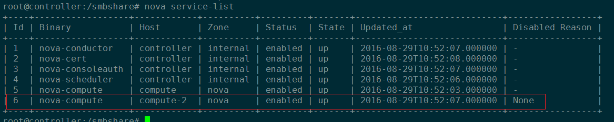

3. openstack 部署实践¶
Tip
利用部门服务器，自己搭建OpenStack来熟悉OpenStack的部署，运维等方面的知识；
- 硬件： Dell e14s(PowerEdge R720)
- 软件： Ubuntu 14.04 LTS
3.1. 准备工作¶
3.1.1. raid 管理¶
- v2.3版本lvm作存储，raid1一块(操作系统安装盘)，其他的作raid5；
- v2.5 ceph作存储，raid1一块，其他的raid0，因为ceph本身有备份机制，不需要raid5；
3.1.2. 安装Ubuntu Server¶
制作为U盘引导盘后，启动服务器，按f8，然后设置system bios，选择启动方式 UEFI 模式 保存重启，然后开始安装。
假如使用虚拟机安装ubuntu时, 特别注意：
- 安装ubuntu，记得使用自定义方式，并且稍后安装。
- 配置root，允许permitrootlogin
- 添加三块网卡，四块硬盘。
3.2. allinone方式部署¶
Note
下面以v2.5版本的juno install allinone脚本为例，说明部署方法和需要注意的细节.
3.2.1. 安装allinone¶
在allinone安装脚本中，只需要配置setup.conf文件，分别设置外网、内网、管理网络的IP地址，掩码和网关即可。 然后执行setup.sh脚本。
setup.sh
3.2.2. 安装ceph¶
以下以ceph allinone脚本为例说明安装过程:
配置文件preconf;
ceph 安装：
./ceph_install.sh
ceph 初始化：
./ceph_initial.sh
ceph 验证：
ceph -s

图：ceph状态验证
创建pool和认证：
./create_pool.sh ./auth_user.sh
Tip
- ceph集群通信尽量使用内部网络IP，不要用外网ip；
- 特别注意的是，由于ceph作为glance和cinder的后端存储，因此创建pool和认证必不可少，否则上传镜像肯定发生错误；
- v2.5 镜像格式只能使用raw格式，因为ceph作后端存储, 不支持qcow2格式;
3.2.3. nova设置secret¶
Important
OpenStack用户租户创建虚拟机，计算节点一定要设置secret，否则租户创建虚拟机时肯定不会成功。 可以使用以下的脚本来设置secret。
1 2 3 4 5 6 7 8 9 10 11 12 13 14 15 16 17 | #!/bin/bash
ceph auth get-key client.cinder | tee client.cinder.key
UUID=`uuidgen`
echo $UUID
cat > secret.xml <<EOF
<secret ephemeral='no' private='no'>
<uuid>${UUID}</uuid>
<usage type='ceph'>
<name>client.cinder secret</name>
</usage>
</secret>
EOF
virsh secret-define --file secret.xml
virsh secret-set-value --secret ${UUID} --base64 $(cat client.cinder.key)
virsh secret-list
cd /usr/bin/
for i in nova*;do service $i restart ;done
|
3.3. 创建虚拟机流程¶
3.3.1. 镜像制作¶
OpenStack镜像制作，可以花一篇专门的笔记来介绍，请参考 OpenStack镜像制作
3.3.2. 创建网络和路由¶
步骤如下：
Note
办公网络(可连接外网)的网段地址为：10.11.113.0/24

办公网络网段、网关
- admin管理员登录，创建外部网络;
- admin管理员在外部网络中创建一个子网；
- 新建租户cecgw，cecgw登录，创建租户网络和子网；
- 组合cecgw创建路由，并设置网关和接口.
Important
另外要特别注意和指出的是，虚拟机获取的浮动IP和相连接的外网子网IP池一致。

外网子网地址池

获取的浮动IP
网络详情如下：


Important
- 外网是 共享，外部网络，vxlan；
- 外网子网注意网关和dns服务器, 并且网段要和办公网络网段一致；
- 租户子网网段随意选择；
3.3.3. 创建虚拟机¶
Important
不管基于vmware还是物理服务器部署OpenStack，计算节点都一定要开启CPU虚拟化。否则会如下错误：

虚拟机没有开启CPU虚拟化
vmware开启虚拟化：

开启虚拟化
物理主机开启虚拟化：
在系统bios中设置开启。
Error
如果openstack有些虚拟机可以创建成功，而有些提示”no valid host found”，那么很可能是因为compute 节点内存不够。
Important
注意，以ceph作为后端存储时，只支持raw格式，不支持vmdk格式的镜像， 也不支持qcow2格式。启动虚拟机会出现”prepare block device” 的错误。
可以使用 qemu-img 命令查看镜像格式，并进行转换：
qemu-img info cirros.img
3.4. 分布式方式部署¶
Note
- 分布式部署时，一般计算节点(compute)一个，网络节点(network)一个， 控制节点(controller)一个，消息队列节点(rabbitmq)一个(消息队列节点和控制节点共用一台设备)； ceph存储节点可以单独部署，也可以安装在各个OpenStack节点上！
- 各个ceph节点osd硬盘数量一致;
- vmware中分布式部署，需要多台虚拟机，一定要直接安装，不要使用vmware的克隆虚拟机 功能(使用该功能，安装ceph集群会缺少部分组件，无法安装).
- 分布式部署时，存在多个节点，脚本执行安装顺序为： 存储–> 控制 –> 网络 –> 计算
3.4.1. 激活root并配置root ssh¶
激活root
sudo passwd # 具有root权限时也可以使用下面的命令激活 passwd root
允许root远程连接：
修改/etc/ssh/sshd_config文件并重启ssh服务。 将文件第28行的without-password改为yes，允许root用户ssh连接。
#PermitRootLogin without-password PermitRootLogin yes # service ssh restart
3.4.2. 安装ceph集群¶
配置preconf文件：

参考README文件，依次执行：
ceph_prepare.sh ceph_install.sh ceph_initial.sh
检查ceph状态，并在HEALTH_OK时，创建pool和auth user
create_pool.sh auth_user.sh
Note
有关ceph部署的更多细节，请参考《 网际云安全套件v2.5 安装说明 》 和 ceph_multinode 部署脚本。
3.4.3. 节点安装¶
根据安装好的四个虚拟机的ip地址，配置setup.conf文件
Important
各个节点要保证互通
把统一配置好的安装脚本复制到各个虚拟机，然后依次安装对应组件：
./setup.sh controller ./setup.sh rabbitmq ./setup.sh networker ./setup.sh computer
Tip
安装控制节点时，最后会提示某些服务启动失败，实际上此时已经安装成功， 我们只需要手动重启相应的服务即可。

提示未知服务
手动启动相应服务：
cd /usr/bin for i in nova*;do service $i restart;done; #for i in neutron*;do service $i restart;done; for i in cinder*;do service $i restart;done; for i in glance*;do service $i restart;done; for i in keystone*;do service $i restart;done;
3.4.4. 计算节点设置secret¶
在任一ceph节点执行：
ceph auth get-key client.cinder | tee client.cinder.key
将生产的 client.cinder.key文件拷贝到计算节点；
nc -l 12345 < client.cinder.key nc -n 192.168.159.151 12345 > client.cinder.key
在计算节点上执行下面的命令：
UUID=`uuidgen` echo $UUID cat > secret.xml <<EOF <secret ephemeral='no' private='no'> <uuid>${UUID}</uuid> <usage type='ceph'> <name>client.cinder secret</name> </usage> </secret> EOF virsh secret-define --file secret.xml virsh secret-set-value --secret ${UUID} --base64 $(cat client.cinder.key)查看生成的secret:
virsh secret-list
根据生成的secret依次更改计算节点/etc/nova/nova.conf和controller节点/etc/cinder/cinder.conf的 rbd_secret_uuid. 并启动nova、cinder、glance服务
# 在控制节点 for i in /usr/bin/cinder*;do service $i restart;done for i in /usr/bin/glance*;do service $i restart;done # 在计算节点 service /usr/bin/nova-compute restart
3.4.5. 计算节点配置nova免密连接¶
请参考 《网际云安全套件v2.5 安装说明》相应章节，然后在每个计算节点执行：
cd allinone-v2.5-install-script/rsakey_login_for_nova_compute_2015_01_29_final_version
vi compute_node
./setup.sh
3.4.6. 扩展计算节点¶
扩展计算节点步骤:
安装ubuntu-14.04.1；
激活root用户并配置root ssh登录；
配置安装脚本setup.conf文件的compute配置项；
Tip
配置compute项时，外网ip，管理网ip，数据网ip都要改变； 并保证唯一.
执行脚本：./setup.sh computer
配置nova免密连接：
cd rsakey_login_for_nova_compute_2015_01_29_final_version/ # 编辑计算节点 vi compute_node.conf ./setup.sh
计算节点设置secret, 将已安装计算节点的client.cinder.key 和 secret.xml文件拷贝到扩展节点， 然后执行：
virsh secret-define --file secret.xml virsh secret-set-value --secret ${UUID} --base64 $(cat client.cinder.key) virsh secret-set-value --secret 4fcd7076-9fde-4c12-b2d2-d5f860401c77 --base64 $(cat client.cinder.key)接着检查生产的secret和已安装计算节点的secret是否一致:
virsh secret-list
最后更改新扩展节点的/etc/nova/nova.conf的rbd_secret_uuid选项, 并重启nova服务：
cd /usr/bin/ for i in nova*;do service $i restart ;done
controller节点检查状态：
source /root/openstackrc nova service-list
成功扩展计算节点
3.5. 部署注意事项¶
Note
mtu设置；
win7蓝屏；
vi /etc/neutron/dnsmasq-neutron.conf
#修改1454为1450
3.5.1. 设备安装¶
安装ubuntu 14.04.1 LTS版本，注意安装过程不要联网，也不要使用apt-get下载软件，因为可能会更新依赖，导致安装云失败。
3.5.2. 网卡配置¶
OpenStack云平台各个节点一般最少要求三个网口，其中外网接口可以联网最好， 管理网口、数据网口不需要连接外网！
数据网口和管理网口一般为static；外网接口一般为dhcp。如:
auto lo
iface lo inet loopback
auto eth0
iface eth0 inet dhcp
auto eth2
iface eth2 inet static
address 10.10.10.250
netmask 255.255.255.0
3.5.3. ceph 安装¶
Warning
- 不管是allinone还是分布式部署，假如没有单独的ceph存储节点，ceph配置的网络一律使用数据网络。 ceph安装时使用数据网络.
- 安装ceph集群时，ceph节点要保证硬盘数量一致。

allinone 配置数据网络

ceph 配置使用数据网络
假如有单独的ceph存储节点，那么ceph安装也不建议使用外网接口，而是使用其他固定的，不会变化的网络接口。
3.5.4. 审计管理登录¶
无法正常登录，需要修改tomcat文件。
cd /opt/apache-tomcat-7.0.50/webapps/ROOT/WEB-INF/classes
vi global.cec.properties
vi jdbc.properties
# 该以上两个文件有关mysql的密码部分写成固定密码。
vi /etc/cecgw/cloudsec.conf
# 然后更改该文件下[VAUDIT]下的IP地址。然后重启tomcat！
# 注意，请使用下面的命令重启tomcat，否则将无法重启
cd /opt/apache-tomcat-7.0.50/bin
./shutdown.sh
./startup.sh
3.5.5. 主机地址映射¶
Note
- 注意，部署时，openstack每一个节点都需要配置/etc/hosts文件，加快解析。地址对应关系为节点的管理网络。
- ceph节点的hosts解析文件使用ceph节点的数据网络。
- 每一个安装节点，都需要配置hosts文件。
3.5.6. 存在独立存储节点时¶
Error
更改/etc/cinder/cinder.conf和/etc/nova/nova.conf文件的 rbd_secret_uuid 项时，直接更改，不要使用注释。
# 不要这么改
# rbd_secret_uuid=xxxxxxx
rbd_secret_uuid=yyyyyy
Error
- 注意，存在单独的ceph集群节点时，需要把ceph节点的/etc/ceph下的文件拷贝到controller节点的/etc/ceph目录下，否则无法上传镜像。
- 此外，还需要把/etc/ceph文件拷贝到计算节点的对应目录下，否则启动虚拟机也会失败；
3.5.7. 解决日志过大问题¶
编辑/etc/crontab 文件，最后加上一行。
vi /etc/crontab
*/10 * * * * root echo "" > /opt/apache-tomcat-7.0.50/logs/catalina.out
# 设置十分钟执行一次，清空大文件
3.5.8. 解决内存泄露问题¶
编辑/etc/crontab 文件，最后加上一行。
# free -hl
vi /etc/crontab
*/60 * * * * root echo 3 > /proc/sys/vm/drop_caches
3.5.9. 重启服务¶
Error
重启服务时，不能使用下面的命令：
for i in /usr/bin/cinder*; do service $i restart;done
使用该命令重启服务会提示未知服务，重启失败；

错误重启服务方式
而应该用：
cd /usr/bin/;
for i in cinder*;do service $i restart;done
正确重启方式
3.6. 其他¶
3.6.1. horizon ip地址配置文件¶
vi /etc/nova/nova.conf
3.6.3. 修改磁盘镜像模板方式¶
创建硬盘快照： 不可行；
- 通过虚拟机保存快照的多种方式测试，均不可行；
- 唯一的方式，是用kvm方式启动镜像模板然后更改密码。
在计算节点安装kvm命令:
# 在计算节点上，安装包执行顺序。三个包。
dpkg -i libxen-4.4_4.4.2-0ubuntu0.14.04.6_amd64.deb
dpkg -i qemu-system-x86_2.0.0+dfsg-2ubuntu1.27_amd64.deb
dpkg -i qemu-kvm_2.0.0+dfsg-2ubuntu1.27_amd64.deb